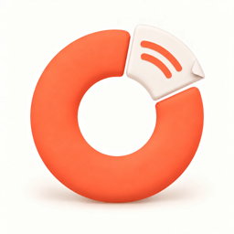

photo.heic
PDFJPGPNGWEBPGIFHEICTIFF
photo.jpg
⌥ Option 꾹

MorphySMALL APP. BIG SHORTCUT.
파일 고르고, 꾹 누르고, 놓으면 끝.
하던 일은 계속. 변환은 Morphy.
Windows 11 64비트 · 0.1.0 베타 · 미서명이라 설치할 때 Windows 보안 경고가 뜰 수 있어요.
앱을 따로 열 필요 없이, 파일이 있는 자리에서.
가운데에서 놓으면 취소돼요.
자주 쓰는 형식으로,
필요한 순간에.
복잡한 변환도 한 번에,
흐름은 그대로.
아이폰 사진을
바로 변환해요.
문서 형식을
손쉽게 바꿔요.
필요한 데이터만
바로 꺼내요.
계정 없이.
사용 기록 수집 없이.
파일이 외부로 전송되지 않아요.
변환된 파일은 원본 옆에 저장돼요.
변환 결과를 직접 확인할 수 있어요.
Markdown은 HTML로도 변환해요.
이미지·PDF는 바로.
문서 변환 기능은 처음 한 번만 추가해요.
약 300MB